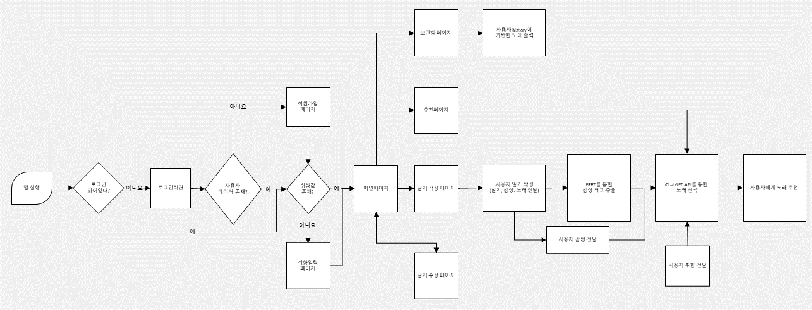

REST API 설계
Spring Boot로 회원, 일기, 플레이리스트 기능을 구현하고 iOS 클라이언트와 주고받는 DTO 구조를 정리했습니다.
Emotion Music Diary
감정 일기를 분석하고 사용자 취향과 연결해, 그날의 감정에 어울리는 음악을 추천하는 서비스입니다.
00 / OVERVIEW
사용자가 작성한 일기를 BERT 감정 분석 API로 처리하고, 분석 결과와 음악 취향을 ChatGPT·Spotify에 연결하는 백엔드 흐름을 구현했습니다. AI 모델 자체의 성능보다 여러 외부 시스템을 하나의 서비스로 동작시키는 경험에 의미가 있습니다.
01 / PRODUCT
일기를 작성하면 감정별 비율을 확인하고, 사용자 취향과 분석 결과를 반영한 추천 플레이리스트를 받을 수 있도록 구성했습니다.

02 / CONTRIBUTION
백엔드 개발과 서비스 파이프라인 연결을 중심으로 참여했습니다.
Spring Boot로 회원, 일기, 플레이리스트 기능을 구현하고 iOS 클라이언트와 주고받는 DTO 구조를 정리했습니다.
BERT 감정 분석 결과가 ChatGPT 음악 추천 입력으로 이어지고 Spotify 음악 정보와 함께 저장되도록 흐름을 연결했습니다.
팀원들과 함께 감정·취향 정보를 명확하게 전달하고 서버에서 처리 가능한 형식으로 응답받기 위한 프롬프트를 조정했습니다.
AWS EC2 환경에 Spring 애플리케이션을 배포하고 환경 변수, 포트와 로그를 관리하며 서버 운영을 경험했습니다.
03 / SERVICE FLOW
일기 입력부터 감정 분석과 음악 추천까지 이어지는 전체 사용자 흐름입니다.

04 / RESULTS
구현 결과와 함께 당시 모델의 한계도 그대로 기록합니다.

RESULT / 01
한국어 일기를 행복·분노·놀람·슬픔으로 분류하고 감정별 확률을 반환했습니다. 명확한 표현은 분류했지만 모호하거나 복합적인 감정에서는 정확도가 낮아졌습니다.

RESULT / 02
분석 감정과 사용자 취향을 조합해 음악 목록을 생성하고, 과거 청취 음악과 AI 추천 음악을 하나의 화면에서 확인하도록 구현했습니다.
05 / LEARNING
지금 돌아보면 BERT와 ChatGPT API를 연결한 비교적 단순한 프로젝트입니다. 정량적인 모델 평가도 충분하지 않았고, 감정이 복합적일 때 분류 성능이 떨어지는 한계가 있었습니다.
하지만 첫 팀 프로젝트를 통해 API 계약, 역할 분담, 클라이언트 연동, 외부 AI 서비스 오케스트레이션과 서버 배포까지 제품 개발의 전체 흐름을 경험했습니다. 이후 더 깊은 AI 프로젝트로 나아가는 출발점이 되었습니다.
06 / STACK